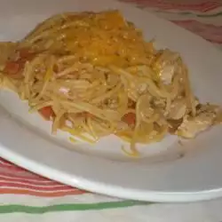

Mexican Pasta

A very unusual but very delicious pasta dish. My Mexican grandfather used to make it and I make it in memory of him. For you, Pepe! Hope you all like it too! Goce! (Enjoy!)
Ingredients
- 2 tablespoons vegetable oil
- 4 skinless, boneless chicken breast halves
- 1 (12 ounce) package spaghetti noodles, broken in half
- 5 roma (plum) tomatoes, chopped
- 1 large onion, chopped
- ½ tablespoon ground cumin
- 2 ½ teaspoons chili powder
- salt and pepper to taste
- 1 ½ cups water
- 1 cup shredded Cheddar cheese
Steps
- Heat 1 tablespoon of vegetable oil in a large skillet over medium heat. Cook chicken breasts in the oil until nicely browned on the outside. Remove from the skillet and set aside.
- Add remaining oil to the skillet, and add the broken spaghetti. Cook, stirring constantly until spaghetti is browned. Drain off any excess oil, and add tomatoes and onion. Dice the chicken breasts, and return them to the skillet. Season with cumin, chili powder, salt and pepper. Pour in water, cover, and simmer over medium-low heat until pasta is tender, and water has been absorbed, about 10 minutes. Check towards the end, and add more water if necessary.
- Spoon the chicken mixture into bowls to serve, and garnish with shredded cheese.